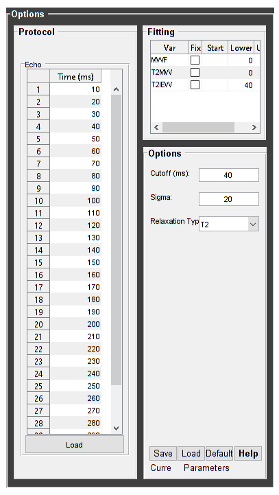
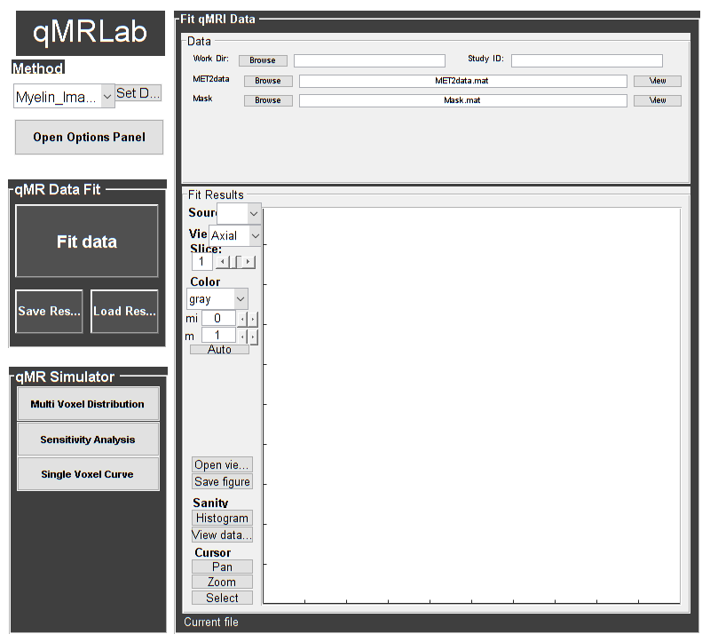
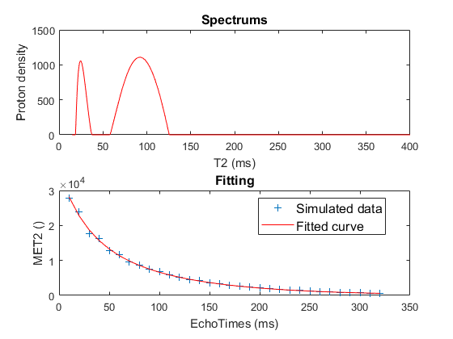

Contents
warning('off','all');
DESCRIPTION
help MWF % Batch to process MWF data without qMRLab GUI (graphical user interface) % Run this script line by line % Written by: Ian Gagnon, 2017
MWF : Myelin Water Fraction from Multi-Exponential T2w data
Assumptions:
Inputs:
MET2data Multi-Exponential T2 data
(Mask) Binary mask to accelerate the fitting (OPTIONAL)
Outputs:
MWF Myelin Wanter Fraction
T2MW Spin relaxation time for Myelin Water (MW) [ms]
T2IEW Spin relaxation time for Intra/Extracellular Water (IEW) [ms]
Options:
Cutoff Cutoff time [ms]
Sigma Noise standard deviation. Currently not corrected for rician bias
Relaxation Type
'T2' For a SE sequence
'T2*' For a GRE sequence
Protocol:
Vector [1 x nbTEs]:
[TE1 TE2 ...] list of echo times [ms]
Example of command line usage (see also <a href="matlab: showdemo MWF_batch">showdemo MWF_batch</a>):
Model = MWF; % Create class from model
Model.Prot.Echo.Mat=[10:10:320];
data = struct; % Create data structure
data.MET2data ='MET2data.mat'; % Load data
data.Mask = 'Mask.mat';
FitResults = FitData(data,Model); %fit data
FitResultsSave_mat(FitResults);
For more examples: <a href="matlab: qMRusage(MWF);">qMRusage(MWF)</a>
Author: Ian Gagnon, 2017
References:
Please cite the following if you use this module:
MacKay, A., Whittall, K., Adler, J., Li, D., Paty, D., Graeb, D.,
1994. In vivo visualization of myelin water in brain by magnetic
resonance. Magn. Reson. Med. 31, 673?677.
In addition to citing the package:
Cabana J-F, Gu Y, Boudreau M, Levesque IR, Atchia Y, Sled JG,
Narayanan S, Arnold DL, Pike GB, Cohen-Adad J, Duval T, Vuong M-T and
Stikov N. (2016), Quantitative magnetization transfer imaging made
easy with qMTLab: Software for data simulation, analysis, and
visualization. Concepts Magn. Reson.. doi: 10.1002/cmr.a.21357
Reference page in Doc Center
doc MWF
Load dataset
[pathstr,fname,ext]=fileparts(which('MWF_batch.m')); cd (pathstr); % Load your parameters to create your Model % load('MWFPamameters.mat'); Model = MWF;
Check data and fitting (Optional)
%************************************************************************** % I- GENERATE FILE STRUCT %************************************************************************** % Create a struct "file" that contains the NAME of all data's FILES % file.DATA = 'DATA_FILE'; file = struct; file.MET2data = 'MET2data.mat'; file.Mask = 'Mask.mat'; %************************************************************************** % II- CHECK DATA AND FITTING %************************************************************************** qMRLab(Model,file); 
Create Quantitative Maps
%************************************************************************** % I- LOAD PROTOCOL %************************************************************************** % Echo (time in millisec) EchoTimes = [10; 20; 30; 40; 50; 60; 70; 80; 90; 100; 110; 120; 130; 140; 150; 160; 170; 180; 190; 200; 210; 220; 230; 240; 250; 260; 270; 280; 290; 300; 310; 320]; Model.Prot.Echo.Mat = EchoTimes; % Update the model Model = Model.UpdateFields; %************************************************************************** % II- LOAD EXPERIMENTAL DATA %************************************************************************** % Create a struct "data" that contains all the data % .MAT file : load('DATA_FILE'); % data.DATA = double(DATA); % .NII file : data.DATA = double(load_nii_data('DATA_FILE')); data = struct; load('MET2data.mat'); data.MET2data = double(MET2data); load('Mask.mat'); data.Mask = double(Mask); %************************************************************************** % III- FIT DATASET %************************************************************************** % All voxels FitResults = FitData(data,Model,1); % 3rd argument plots a waitbar delete('FitTempResults.mat'); %************************************************************************** % IV- CHECK FITTING RESULT IN A VOXEL %************************************************************************** figure voxel = [37, 40, 1]; FitResultsVox = extractvoxel(FitResults,voxel,FitResults.fields); dataVox = extractvoxel(data,voxel); Model.plotmodel(FitResultsVox,dataVox) %************************************************************************** % V- SAVE %************************************************************************** % .MAT file : FitResultsSave_mat(FitResults,folder); % .NII file : FitResultsSave_nii(FitResults,fname_copyheader,folder); FitResultsSave_mat(FitResults); save('MWFPamameters.mat','Model');
Check the results
Load them in qMRLab